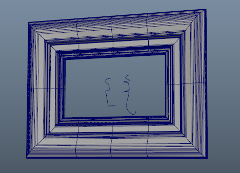
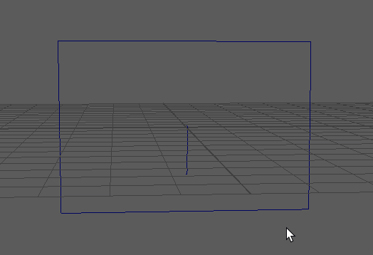
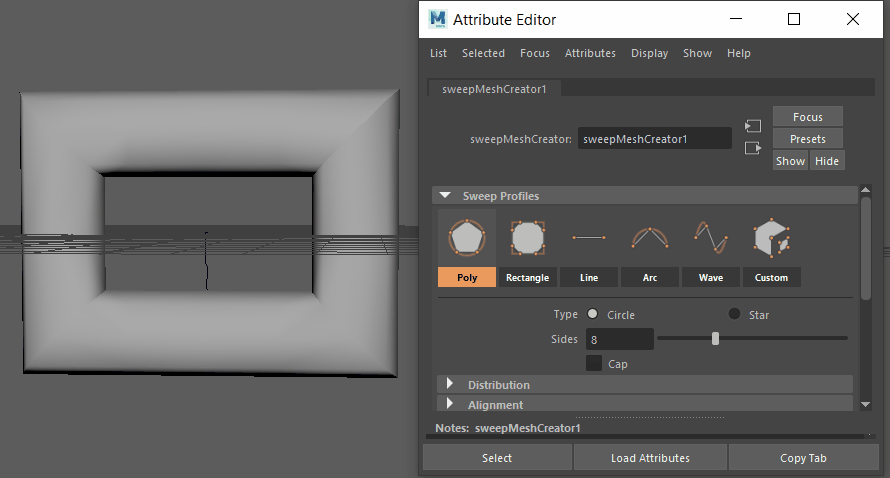
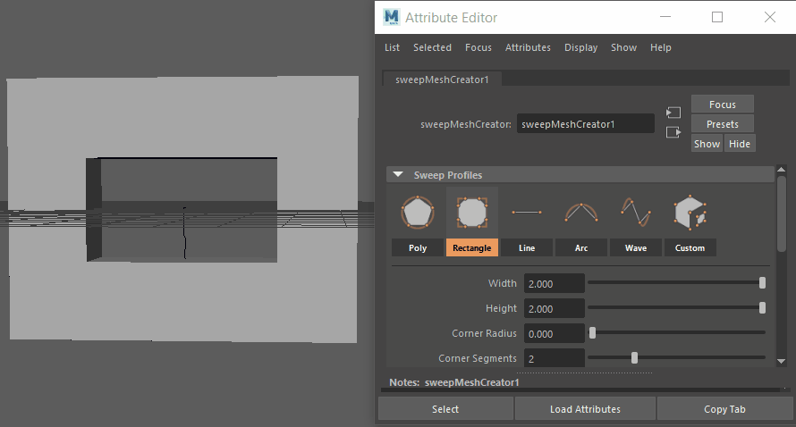
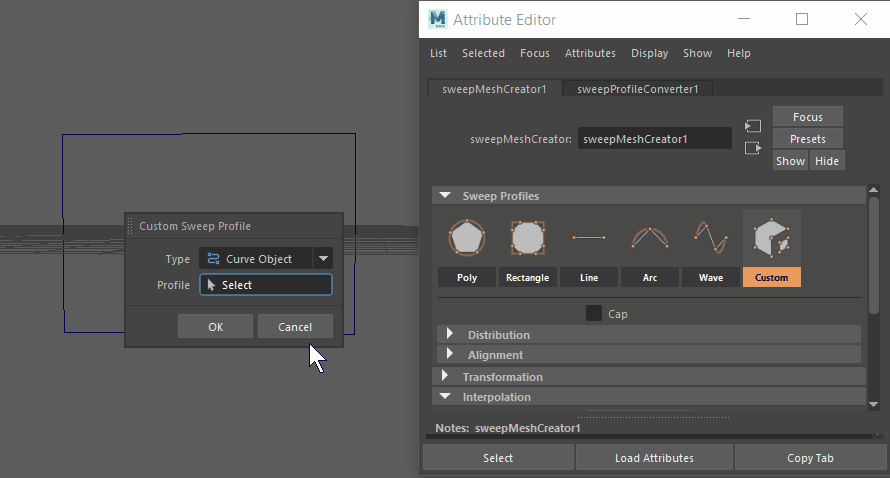
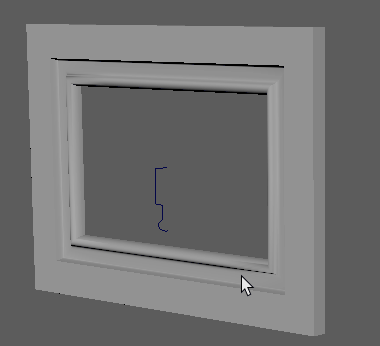
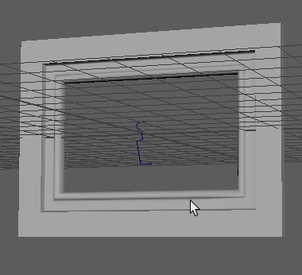
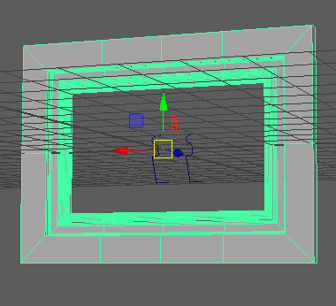
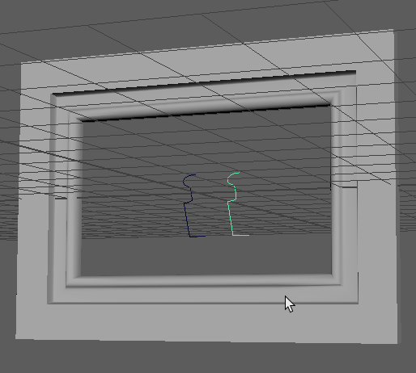

本示例说明了如何使用“扫描网格”(Sweep Mesh)工具中的自定义扫描创建图片框架。可以使用这些设置快速创建天花线、门、框架等。
使用“扫描网格”(Sweep Mesh)创建基本框架
- 从简单的二维方形开始。若要快速创建方形，请选择。将 EP 曲线工具选项(EP Curve Tool Options)中的“曲线次数”(Curve Degree)设置设为“线性”(Linear)。
- 在视口中绘制矩形的三条边，然后选择以添加缺少的边。
- 在原点处创建一条要用作图案的剖面曲线。它将用于定义挤出的形状。

- 选择该方形，然后从“多边形建模”(Poly Modeling)工具架中选择“扫描网格”(Sweep Mesh)，或在 Maya 主菜单中选择“。此时将显示“扫描网格”(Sweep Mesh)选项。将创建具有圆角的框架的默认扫描网格。
- 将“扫描剖面”(Sweep Profile)设置为“矩形”(Rectangle)。
- 减小“角半径”(Corner Radius)以创建尖角。

- 调整“高度”(Height)和“宽度”(Width)设置以更改框架的总体大小。
在接下来的一组步骤中，可以使用剖面曲线将更多细节添加到框架。
使用剖面曲线和自定义扫描
- 使用在上述步骤中创建的基本框架形状，在“扫描网格”(Sweep Mesh)工具中，选择“自定义”(Custom)。此时将打开“自定义扫描剖面”(Custom Sweep Profile)对话框。

- 确保将“类型”(Type)设置为“曲线对象”(Curve Object)，然后单击“剖面曲线”(Profile Curve)。

- 剖面曲线的方向会影响网格上的结果。可沿不同方向旋转剖面曲线以查看各种结果。

- 当框架看起来合适时，在“自定义扫描剖面”(Custom Sweep Profile)对话框中单击“确定”(OK)。单击“确定”(OK)将设置当前剖面曲线方向。
- 缩放框架网格以更改其尺寸。
扫描网格与剖面曲线保持实时链接，以便对其所做更改也会更改生成的网格。这样，您可以在工作时调整结果。有关此效果的演示，请参见以下工作流。
通过修改剖面曲线来更改自定义扫描网格
该工作流使用上述工作流中的框架网格和剖面示例来演示扫描网格如何连接到剖面曲线并在您进行更改时进行更新。
- 使用上例中的剖面曲线，复制 (Ctrl + D) 剖面曲线，然后将其移动到原始剖面曲线旁。

- 选择框架，然后在“属性编辑器”(Attribute Editor)中选择“扫描网格创建器 1”(Sweep Mesh Creator1)以查看“扫描网格”(Sweep Mesh)工具。
- 在“扫描网格”(Sweep Mesh)选项中单击“自定义”(Custom)，此时将打开“自定义扫描剖面”(Custom Sweep Profile)对话框。
- 选择复制的剖面曲线，然后在“自定义扫描剖面”(Custom Sweep Profile)对话框中单击“确定”(OK)，将第二条剖面曲线设置为框架的驱动者。

- 修改第二条剖面曲线。例如，对其进行缩放，或在其上单击鼠标右键，选择“控制顶点”(Control Vertex)，然后移动这些点。

默认情况下，原始框架曲线（方形）埋在网格的中心，这可能会造成难以选择它。您可以在“大纲视图”(Outliner)中选择曲线，也可以在“扫描网格”(Sweep Mesh)工具的“对齐”(Alignment)设置中进行更改，方法是将“水平”(Horizontal)设置更改为“顶”(Top)或“底”(Bottom)，将“垂直”(Vertical)设置更改为“左”(Left)或“右”(Right)。